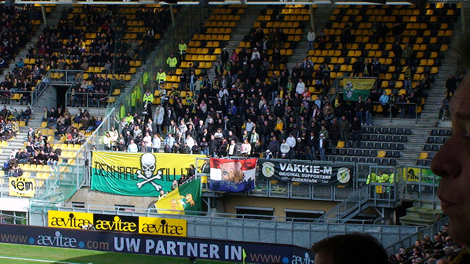
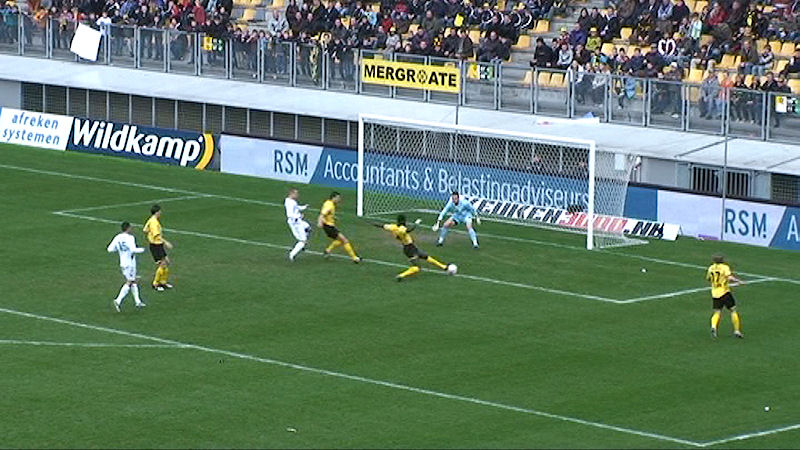
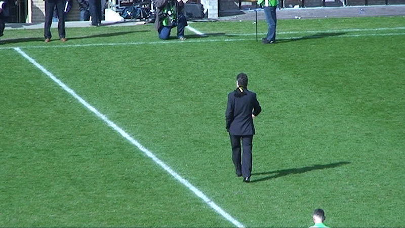

ADO bracht twee busladingen Hagenezen mee.
In het PLS zijn diverse pilaren vernoemd naar roemruchte Roda-spelers die
minimaal vier jaar voor de ploeg voetbalden. Omdat de pilaar met
de naam van bikkelaar Ehlen ontbreekt is er in vak Z16 alsnog een ode
gebracht aan de "Neeskens van Roda JC", Leo Ehlen die negen jaar
voor Roda JC voetbalde heeft met ingang van vandaag zijn persoonlijke paal.

ADO is duidelijk voor een punt gekomen. Roda neemt het initiatief maar komt
zelf af en toe in de problemen zoals hier waar Kah bijna zijn
eigen keeper passeert. Ternauwernood hobbelt de bal rechts naast de
paal.
Eerder dan verwacht is Oper hersteld van een nare blessure. Hier een
tevergeefse poging om Zwinkels te passeren.
Het gelijk van Van Veldhoven; de arbitrage deugt niet. Bossen bestraft Oper
voor een lichte overtreding.
Roda komt steeds dichter bij een doelpunt.
Vooral linksback De Jong, stoomt veelvuldig mee op en weet met goede
voorzetten zijn medespelers te vinden.
ADO komt dus voor een punt. Tijdrekken met vermeende blessures hoort daar
bij. In dat kader is Buijs er even bij gaan liggen.
Geen service in de rust....
Oper ziet de neerdalende bal uit een kopduel in zijn buurt komen en zoekt
zijn balans om keihard af te drukken...
... waarna de bal tussen een kluwen van spelers belandt in het uiterste
hoekje van het doel van Zwinkels: 1-0, (67').
Na een vrije trap van Linssen belandt de bal tussen keeper Zwinkels en
verdediger Ammi. Oper is beiden te slim af, maar zijn inzet gaat via
het been van Ammi op de paal. Cissé is er snel bij om de rebound binnen te
tikken: 2-0, (77').
Daarna maakt Matondo een vreugdedansje met Cissé.
Opstootje bij het formeren van de muur na een overtreding op een Hagenees.
Na een maandenlange revalidatie maakt Van Tornhout zijn rentree.

Wanneer de trekpop van Kuijer onder het gezang "Narinx rot op" het veld
verlaat wordt de stadionmuziek meteen harder gezet.
Carnavalsverein Roda JC.
Delorge met fans op de foto in de Kickoff. Ook Lachambre was present.
(photograph by kind courtesy of Kevin Hiemerda)